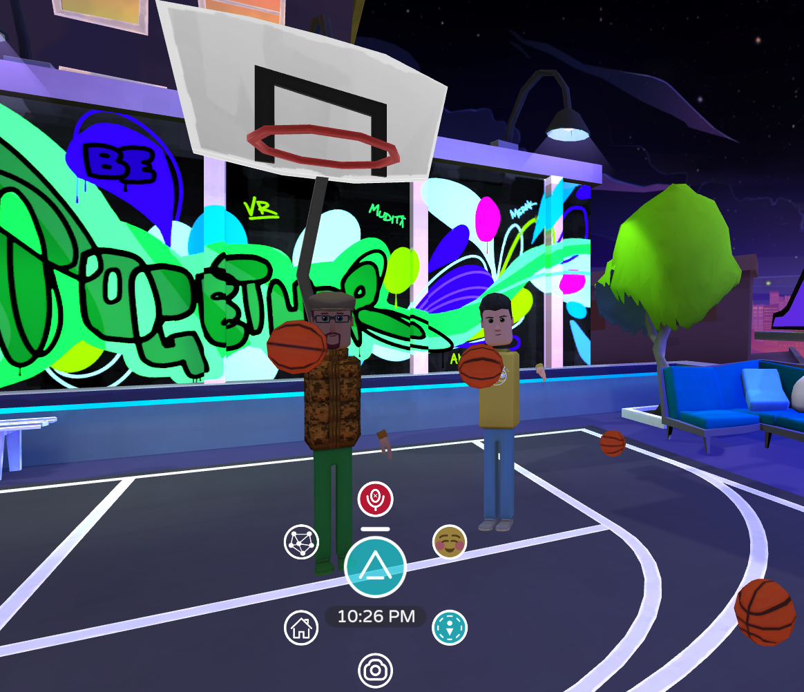
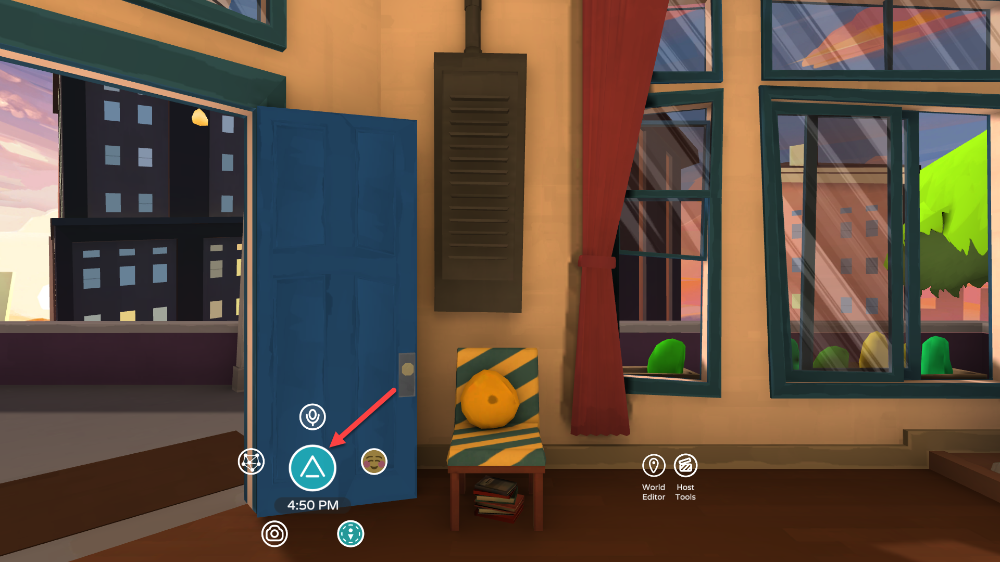
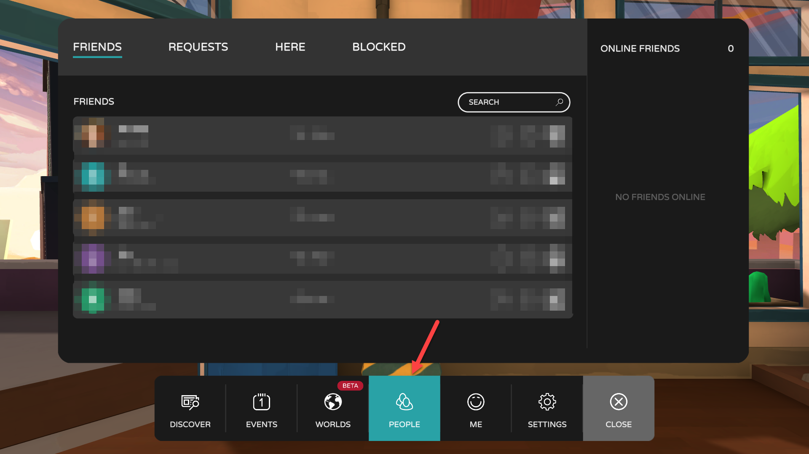
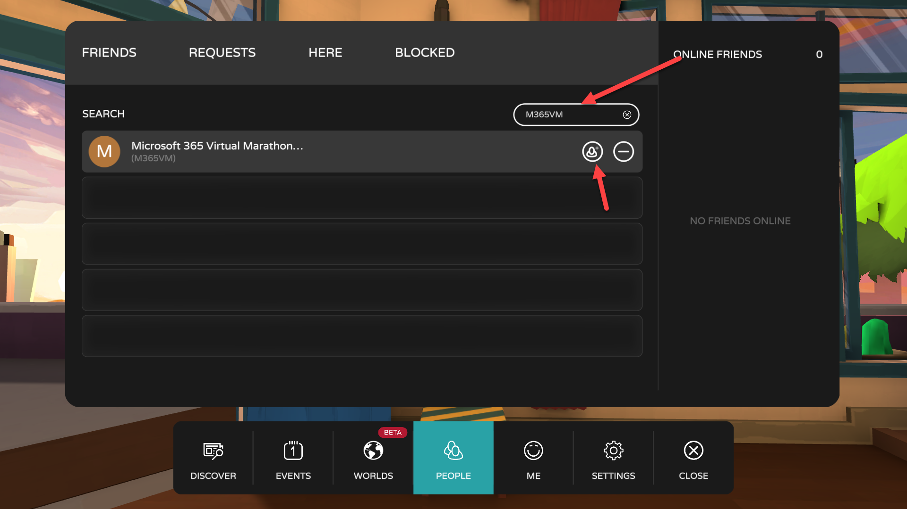
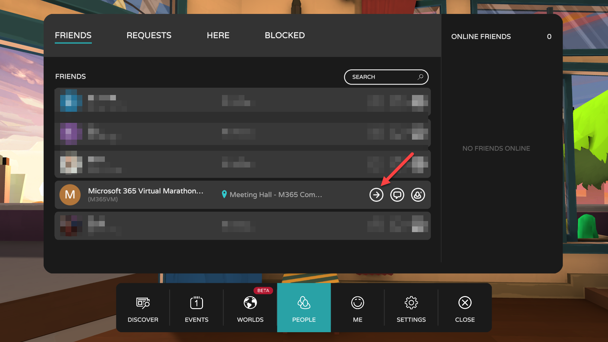

Community Zone
As part of the Microsoft 365 Virtual Marathon we will be offering a Community Zone in Virtual Reality. In the community zone we will have a viewing area for keynotes along with areas for sociallizing and playing games. The community will be hosted in AltspaceVR. AltspaceVR offers virtual reality interaction along with a 2D non VR mode.
- To participiate you need to install one of the applications for your device or desired connection method. https://altvr.com/get-altspacevr/
- Sign up and create an account if you have not already done so. https://account.altvr.com/users/sign_up
- When the time comes join the fun at Community Zone(Link only works if the AltspaceVR app is installed)
Alternative instructions for getting to the space.
- After installing the app and creating an account as above launch the AltspaceVR application and sign in.
- After the app finishes loading click on the AltspaceVR logo.
 - Click on People
 - In the search box type M365VM and then click the send invite button. 
- We will have someone watching and accepting all friend requests. After the friend request has been accepted you can see where the user is in AltspaceVR and can click the "Go to User" button to jump to where the user is. The M365VM user will be standing in the Meeting Hall room during timeframes when the Community Zone is open. 